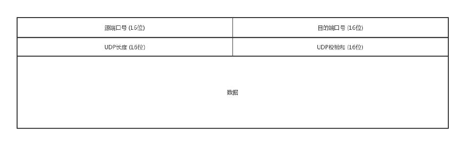

UDP
传输层里比较重要的两个协议，一个是 TCP，一个是 UDP。
TCP 和 UDP 的区别
TCP 是面向连接的，UDP 是面向无连接的。所谓的建立连接，是为了在客户端和服务端维护连接，而建立一定的数据结构来维护双方交互的状态，用
这样的数据结构来保证所谓的面向连接的特性。
- TCP 提供可靠交付。通过 TCP 连接传输的数据，无差错、不丢失、不重复、并且按序到达。
- UDP 继承了 IP 包的特性，不保证不丢失，不保证按顺序到达。IP 包是没有任何可靠性保证的。
- TCP 是面向字节流的。发送的时候发的是一个流，没头没尾。IP 包不是流，而是一个个的 IP 包。之所以变成了流，这也是 TCP 自己的状态维护做
的事情。
- UDP 继承了 IP 的特性，基于数据报的，一个一个地发，一个一个地收。
- TCP 是可以有拥塞控制的。它意识到包丢弃了或者网络的环境不好了，就会根据情况调整自己的行为，看看是不是发快了，要不要发慢点。
- UDP 就不会，应用让我发，我就发，管它洪水滔天。
- TCP 其实是一个有状态服务，通俗地讲就是有脑子的，里面精确地记着发送了没有，接收到没有，发送到哪个了，应该接收哪个了，错一点儿都不行。
- UDP 则是无状态服务。
网络传输是以包为单位的，二层叫帧，网络层叫包，传输层叫段。我们笼统地称为包。包单独传输，自行选路，在不同的设备封装解封装，不保证
到达。UDP 完全继承了这些特性。
UDP 包头

IP 头里面有个 8 位协议，这里会存放，数据里面到底是 TCP 还是 UDP，机器知道是 UDP，就可以解析出来。
处理完传输层的事情，内核的事情基本就干完了，里面的数据应该交给应用程序自己去处理。通过端口来区分要哪个应用程序来处理。
三个特点
- 第一，沟通简单，相信网络通路默认就是很容易送达的，不容易被丢弃的。
- 第二，轻信他人。它不会建立连接，虽然有端口号，但是监听在这个地方，谁都可以传给他数据。也可以传给任何人数据。
- 第三，愣头青，做事不懂权变。不会根据网络的情况进行发包的拥塞控制，无论网络丢包丢成啥样了，它该怎么发还怎么发。
三个场景
UDP 使用的场景：
- 需要资源少，在网络情况比较好的内网，或者对于丢包不敏感的应用。DHCP 就是基于 UDP 协议的。一般的获取 IP 地址都是内网请求，而且一次获取
不到 IP 又没事，过一会儿还有机会。
- 不需要一对一沟通，建立连接，而是可以广播的应用。
- 需要处理速度快，时延低，可以容忍少数丢包，但是要求即便网络拥塞，也毫不退缩，一往无前的时候。
基于 UDP 的五个例子
- QUIC（全称Quick UDP Internet Connections，快速UDP 互联网连接）是 Google 提出的一种基于 UDP 改进的通信协议，其目的是降低网
络通信的延迟，提供更好的用户互动体验。QUIC 在应用层上，会自己实现快速连接建立、减少重传时延，自适应拥塞控制。
- 流媒体的协议，直播协议多使用 RTMP，而 RTMP 协议是基于 TCP 的。TCP 的严格顺序传输要保证前一个收到了，下一个才能确认，如果前一个收
不到，下一个就算包已经收到了，在缓存里面，也需要等着。对于直播来讲，这显然是不合适的，对于丢包，其实对于视频播放来讲，有的包可以丢，有的
包不能丢，因为视频的连续帧里面，有的帧重要，有的不重要，如果必须要丢包，隔几个帧丢一个，其实看视频的人不会感知，但是如果连续丢帧，就会
感知了，因而在网络不好的情况下，应用希望选择性的丢帧。还有就是当网络不好的时候，TCP 协议会主动降低发送速度，这对本来当时就卡的看
视频来讲是要命的，应该应用层马上重传，而不是主动让步。因而，很多直播应用，都基于 UDP 实现了自己的视频传输协议。
- 实时游戏中客户端和服务端要建立长连接，来保证实时传输。但是游戏玩家很多，服务器却不多。由于维护 TCP 连接需要在内核维护一些数据结构，因
而一台机器能够支撑的 TCP 连接数目是有限的，然后 UDP 由于是没有连接的，在异步 IO 机制引入之前，常常是应对海量客户端连接的策略。另外还
是 TCP 的强顺序问题，对战的游戏，对网络的要求很简单，玩家通过客户端发送给服务器鼠标和键盘行走的位置，服务器会处理每个用户发送过来的所
有场景，处理完再返回给客户端，客户端解析响应，渲染最新的场景展示给玩家。如果出现一个数据包丢失，所有事情都需要停下来等待这个数据包重发。
客户端会出现等待接收数据，然而玩家并不关心过期的数据，激战中卡 1 秒，等能动了都已经死了。游戏对实时要求较为严格的情况下，采用自定
义的可靠 UDP 协议，自定义重传策略，能够把丢包产生的延迟降到最低，尽量减少网络问题对游戏性造成的影响。
- 物联网领域终端资源少，很可能只是个内存非常小的嵌入式系统，而维护 TCP 协议代价太大；另一方面，物联网对实时性要求也很高。Google 旗下
的 Nest 建立 Thread Group，推出了物联网通信协议 Thread，就是基于 UDP 协议的。
- 4G 网络里，移动流量上网的数据面对的协议 GTP-U 是基于 UDP 的。